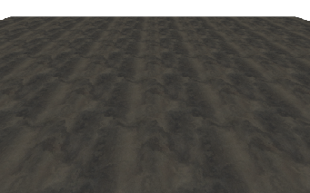
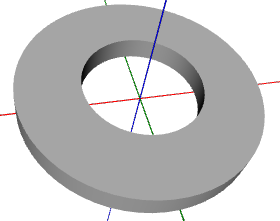

This page contains source code for creating various kinds of 3D models on the fly.
Contents
Contents
3D Line
Cone
Floor
Striped Disk
Washer
Miscellaneous
3D Line
This method creates a thin line-like 3D object.
// point1, point2 - end points of the line
// thickness - thickness of the line in units, default 1
function create3DLine(point1,point2,thickness){
if(thickness==null)thickness=1
var vector=GLMath.vec3sub(point1,point2);
var dist=GLMath.vec3length(vector);
var normVector=GLMath.vec3norm(vector);
var midPoint=GLMath.vec3lerp(point1,point2,0.5);
var line=Meshes.createCapsule(thickness/2,dist,6,4);
var matrix=GLMath.quatToMat4(GLMath.quatFromVectors([0,0,1],normVector));
matrix[12]=midPoint[0]
matrix[13]=midPoint[1]
matrix[14]=midPoint[2]
return line.transform(matrix);
}Cone
This method creates a cone that's closed at its base.

function createClosedCone(radius,height,slices){
return Meshes.createClosedCylinder(radius,0,height,slices,1);
}Floor
This method creates a flat tiled floor.

// xStart, yStart - X and Y coordinates of the start of the floor
// width, height - Width and height of the floor
// tileSize - Size of each floor tile
// z - Z-coordinate where the floor will be placed (optional,
// default 0)
function makeFloor(xStart,yStart,width,height,tileSize,z){
if(z==null)z=0.0
var mesh=new Mesh()
var tilesX=Math.ceil(width/tileSize)
var tilesY=Math.ceil(height/tileSize)
var lastY=(height-(tilesY*tileSize))/tileSize
var lastX=(width-(tilesX*tileSize))/tileSize
if(lastY<=0)lastY=1.0
if(lastX<=0)lastX=1.0
mesh.normal3(0,0,1)
for(var y=0;y<tilesY;y++){
var endY=(y==tilesY-1) ? 1.0-lastY : 0.0
var endPosY=(y==tilesY-1) ? yStart+height : yStart+(y+1)*tileSize
for(var x=0;x<tilesX;x++){
var endX=(x==tilesX-1) ? lastX : 1.0
var endPosX=(x==tilesX-1) ? xStart+width : xStart+(x+1)*tileSize
mesh.mode(Mesh.TRIANGLE_STRIP)
.texCoord2(0,1).vertex3(xStart+x*tileSize,yStart+y*tileSize,z)
.texCoord2(0,endY).vertex3(xStart+x*tileSize,endPosY,z)
.texCoord2(endX,1).vertex3(endPosX,yStart+y*tileSize,z)
.texCoord2(endX,endY).vertex3(endPosX,endPosY,z)
}
}
return mesh
}Striped Disk
This method creates a ring or disk striped in two colors.

// inner, outer - inner and outer radius of the disk
// color1, color2 - colors of each stripe; for example:
// "red", "#223344", "rgb(255,0,0)", [0,1,0]
// sections - number of stripes
// sectionCount - number of sections per stripe
function stripedDisk(inner,outer,color1,color2,sections,sectionCount){
if(sectionCount==null)sectionCount=4
var firstColor=true
var ret=new Mesh()
var sweep=360.0/sections;
for(var i=0;i<sections;i++){
var angle=360.0*(i*1.0/sections);
var mesh=Meshes.createPartialDisk(inner,outer,sectionCount,1,angle,sweep)
.setColor3(firstColor ? color1 : color2)
firstColor=!firstColor
ret.merge(mesh);
}
return ret;
}Washer
This method creates a washer-shaped 3D model.

function createWasher(inner,outer,height,slices){
var innerCylinder=Meshes.createCylinder(inner,inner,height,slices,1,false,true);
var outerCylinder=Meshes.createCylinder(outer,outer,height,slices,1,false,false);
var base=Meshes.createDisk(inner,outer,slices,2,true).reverseWinding();
var top=Meshes.createDisk(inner,outer,slices,2,false);
// move the top disk to the top of the cylinder
top.transform(GLMath.mat4translated(0,0,height));
// merge the base and the top
return innerCylinder.merge(outerCylinder).merge(base).merge(top);
}Miscellaneous
function extrudePath(path, zStart, zEnd, flatness){
var lines=path.getLines(flatness)
var mesh=new Mesh().mode(Mesh.TRIANGLES)
var z1=Math.min(zStart,zEnd)
var z2=Math.max(zStart,zEnd)
for(var i=0;i<lines.length;i++){
var line=lines[i]
mesh.vertex3(line[0],line[1],z1)
.vertex3(line[0],line[1],z2)
.vertex3(line[2],line[3],z1)
.vertex3(line[2],line[3],z1)
.vertex3(line[0],line[1],z2)
.vertex3(line[2],line[3],z2)
}
mesh.recalcNormals()
return mesh
}
// Demonstrates making a mesh plane from triangles
function createPathDisk(path, z, flatness){
if(z==null)z=0
var tris=path.getTriangles(flatness);
var mesh=new Mesh().mode(Mesh.TRIANGLES)
.normal3(0,0,1);
for(var i=0;i<tris.length;i++){
var tri=tris[i]
mesh.vertex3(tri[0],tri[1],z)
.vertex3(tri[2],tri[3],z)
.vertex3(tri[4],tri[5],z)
}
return mesh
}